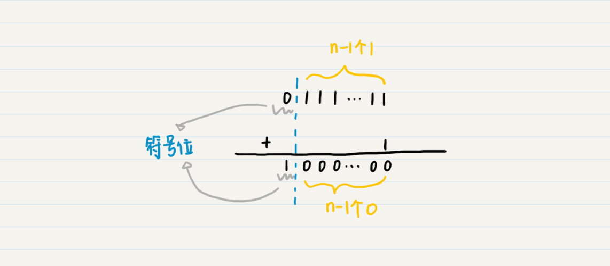
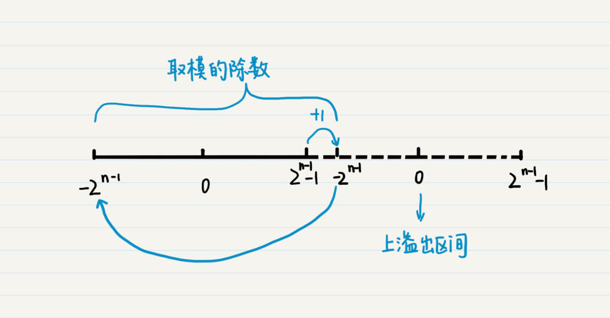
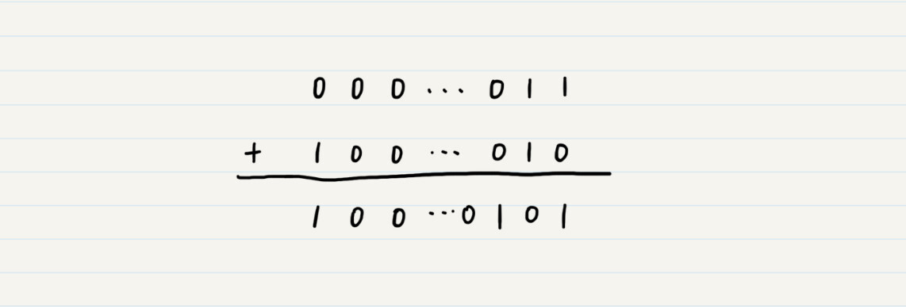
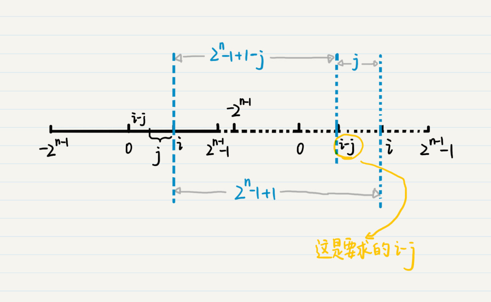
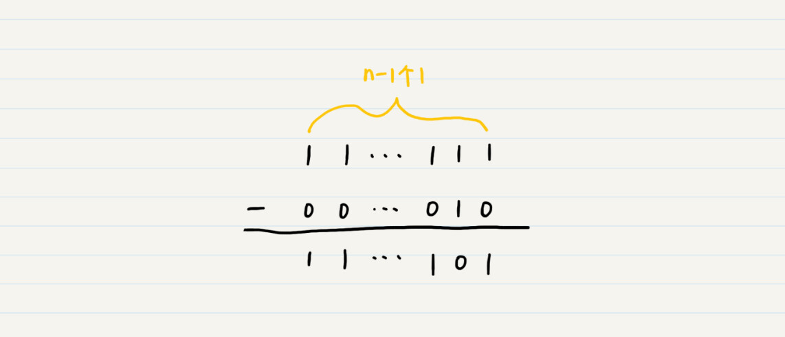
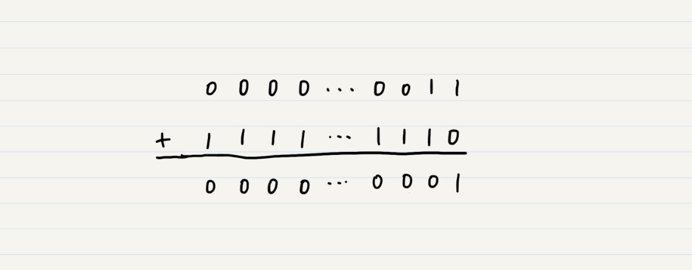

- 01 二进制：不了解计算机的源头，你学什么编程.md
- 02 余数：原来取余操作本身就是个哈希函数.md
- 03 迭代法：不用编程语言的自带函数，你会如何计算平方根？.md
- 04 数学归纳法：如何用数学归纳提升代码的运行效率？.md
- 05 递归（上）：泛化数学归纳，如何将复杂问题简单化？.md
- 06 递归（下）：分而治之，从归并排序到MapReduce.md
- 07 排列：如何让计算机学会“田忌赛马”？.md
- 08 组合：如何让计算机安排世界杯的赛程？.md
- 09 动态规划（上）：如何实现基于编辑距离的查询推荐？.md
- 10 动态规划（下）：如何求得状态转移方程并进行编程实现？.md
- 11 树的深度优先搜索（上）：如何才能高效率地查字典？.md
- 12 树的深度优先搜索（下）：如何才能高效率地查字典？.md
- 13 树的广度优先搜索（上）：人际关系的六度理论是真的吗？.md
- 14 树的广度优先搜索（下）：为什么双向广度优先搜索的效率更高？.md
- 15 从树到图：如何让计算机学会看地图？.md
- 16 时间和空间复杂度（上）：优化性能是否只是“纸上谈兵”？.md
- 17 时间和空间复杂度（下）：如何使用六个法则进行复杂度分析？.md
- 18 总结课：数据结构、编程语句和基础算法体现了哪些数学思想？.md
- 19 概率和统计：编程为什么需要概率和统计？.md
- 20 概率基础（上）：一篇文章帮你理解随机变量、概率分布和期望值.md
- 21 概率基础（下）：联合概率、条件概率和贝叶斯法则，这些概率公式究竟能做什么？.md
- 22 朴素贝叶斯：如何让计算机学会自动分类？.md
- 23 文本分类：如何区分特定类型的新闻？.md
- 24 语言模型：如何使用链式法则和马尔科夫假设简化概率模型？.md
- 25 马尔科夫模型：从PageRank到语音识别，背后是什么模型在支撑？.md
- 26 信息熵：如何通过几个问题，测出你对应的武侠人物？.md
- 27 决策树：信息增益、增益比率和基尼指数的运用.md
- 28 熵、信息增益和卡方：如何寻找关键特征？.md
- 29 归一化和标准化：各种特征如何综合才是最合理的？.md
- 30 统计意义（上）：如何通过显著性检验，判断你的A_B测试结果是不是巧合？.md
- 31 统计意义（下）：如何通过显著性检验，判断你的A_B测试结果是不是巧合？.md
- 32 概率统计篇答疑和总结：为什么会有欠拟合和过拟合？.md
- 33 线性代数：线性代数到底都讲了些什么？.md
- 34 向量空间模型：如何让计算机理解现实事物之间的关系？.md
- 35 文本检索：如何让计算机处理自然语言？.md
- 36 文本聚类：如何过滤冗余的新闻？.md
- 37 矩阵（上）：如何使用矩阵操作进行PageRank计算？.md
- 38 矩阵（下）：如何使用矩阵操作进行协同过滤推荐？.md
- 39 线性回归（上）：如何使用高斯消元求解线性方程组？.md
- 40 线性回归（中）：如何使用最小二乘法进行直线拟合？.md
- 41 线性回归（下）：如何使用最小二乘法进行效果验证？.md
- 42 PCA主成分分析（上）：如何利用协方差矩阵来降维？.md
- 43 PCA主成分分析（下）：为什么要计算协方差矩阵的特征值和特征向量？.md
- 44 奇异值分解：如何挖掘潜在的语义关系？.md
- 45 线性代数篇答疑和总结：矩阵乘法的几何意义是什么？.md
- 46 缓存系统：如何通过哈希表和队列实现高效访问？.md
- 47 搜索引擎（上）：如何通过倒排索引和向量空间模型，打造一个简单的搜索引擎？.md
- 48 搜索引擎（下）：如何通过查询的分类，让电商平台的搜索结果更相关？.md
- 49 推荐系统（上）：如何实现基于相似度的协同过滤？.md
- 50 推荐系统（下）：如何通过SVD分析用户和物品的矩阵？.md
- 51 综合应用篇答疑和总结：如何进行个性化用户画像的设计？.md
- 导读：程序员应该怎么学数学？.md
- 开篇词 作为程序员，为什么你应该学好数学？.md
- 数学专栏课外加餐（一） 我们为什么需要反码和补码？.md
- 数学专栏课外加餐（三）：程序员需要读哪些数学书？.md
- 数学专栏课外加餐（二） 位操作的三个应用实例.md
- 结束语 从数学到编程，本身就是一个很长的链条.md
数学专栏课外加餐（一） 我们为什么需要反码和补码？
你好，我是黄申。欢迎来到第一次课外加餐时间。
专栏已经更新了几讲，看到这么多人在留言区写下自己的疑惑和观点，我非常开心。很多同学在留言里提出了很多非常好的问题，所以我决定每隔一段时间，对留言里的疑问、有代表性的问题做个集中的解答，也是对我们主线内容做一个补充，希望对你有帮助。
什么是符号位？为什么要有符号位？
在第1讲里，我介绍了十进制数转二进制数。这里面很多人对逻辑右移和算术右移中提到的符号位和补码有疑惑。这里面涉及了几个重要的概念，包括符号位、溢出、原码、反码和补码。我详细讲一下这几个点的来龙去脉。
首先我们来看，什么是符号位，为什么要有符号位？用一句话来概括就是，符号位是有符号二进制数中的最高位，我们需要它来表示负数。
在实际的硬件系统中，计算机CPU的运算器只实现了加法器，而没有实现减法器。那么计算机如何做减法呢？我们可以通过加上一个负数来达到这个目的。比如，3-2可以看作3+(-2)。因此，负数的表示对于计算机中的二进制减法至关重要。
那么，接下来的问题就是，如何让计算机理解哪些是正数，哪些是负数呢？为此，人们把二进制数分为有符号数（signed）和无符号数（unsigned）。
如果是有符号数，那么最高位就是符号位。当符号位为0时，表示该数值为正数；当符号位为1时，表示该数值为负数。例如一个8位的有符号位二进制数10100010，最高位是1，这就表示它是一个负数。
如果是无符号数，那么最高位就不是符号位，而是二进制数字的一部分，例如一个8位的无符号位二进制数10100010，我们可以通过第1讲讲过的内容，换算出它所对应的十进制数是162。由于没有表示负数的符号位，所有无符号位的二进制都代表正数。
有些编程语言，比如Java，它所有和数字相关的数据类型都是有符号位的；而有些编程语言，比如C语言，它有诸如unsigned int这种无符号位的数据类型。
下面我们来看，什么是溢出？
在数学的理论中，数字可以有无穷大，也有无穷小。可是，现实中的计算机系统，总有一个物理上的极限（比如说晶体管的大小和数量），因此不可能表示无穷大或者无穷小的数字。对计算机而言，无论是何种数据类型，都有一个上限和下限。
在Java中，int型是32位，它的最大值也就是上限是2^31-1（最高位是符号位，所以是2的31次方而不是32次方），最小值也就是下限是-2^31。而long型是64位，它的最大值，也就是上限是2^63-1；最小值，也就是下限是-2^63。
对于n位的数字类型，符号位是1，后面n-1位全是0，我们把这种情形表示为-2^(n-1) ，而不是2^(n-1)。一旦某个数字超过了这些限定，就会发生溢出。如果超出上限，就叫上溢出（overflow）。如果超出了下限，就叫下溢出（underflow）。
那么溢出之后会发生什么呢？我以上溢出为例来给你解释。
n位数字的最大的正值，其符号位为0，剩下的n-1位都为1，再增大一个就变为了符号位为1，剩下的n-1位都为0。而符号位是1，后面n-1位全是0，我们已经说过这表示-2^(n-1)。

那么就是说，上溢出之后，又从下限开始，最大的数值加1，就变成了最小的数值，周而复始，这不就是余数和取模的概念吗？下面这个图可以帮助你理解。

其中右半部分的虚线表示已经溢出的区间，而为了方便你理解，我将溢出后所对应的数字也标在了虚线的区间里。由此可以看到，所以说，计算机数据的溢出，就相当于取模。而用于取模的除数就是数据类型的上限减去下限的值，再加上1，也就是(2^(n-1)-1)-(-2^(n-1))+1=2x2^(n-1)-1+1=2^n-1+1。
你可能会好奇，这个除数为什么不直接写成2^n呢？这是因为2^n已经是n+1位了，已经超出了n位所能表示的范围。
二进制的原码、反码及补码
理解了符号位和溢出，我接下来说说，什么是二进制的原码、反码和补码，以及我们为什么需要它们。
原码就是我们看到的二进制的原始表示。对于有符号的二进制来说，原码的最高位是符号位，而其余的位用来表示该数字绝对值的二进制。所以+2的原码是000…010，-2的的原码是100.…010。
那么我们是不是可以直接使用负数的原码来进行减法计算呢？答案是否定的。我还是以3+(-2)为例。
假设我们使用Java中的32位整型来表示2，它的二进制是000…010。最低的两位是10，前面的高位都是0。如果我们使用-2的原码，也就是100…010，然后我们把3的二进制原码000…011和-2的二进制原码100…010相加，会得到100…0101。具体计算你可以看我画的这张图。

二进制编码上的加减法和十进制类似，只不过，在加法中，十进制是满10才进一位，二进制加法中只要满2就进位；同样，在减法中，二进制借位后相当于2而不是10。
相加后的结果是二进制100…0101，它的最高位是1，表示负数，而最低的3位是101，表示5，所以结果就是-5的原码了，而3+(-2)应该等于1，两者不符。
如果负数的原码并不适用于减法操作，那该怎么办呢？这个问题的解答还要依赖计算机的溢出机制。
我刚刚介绍了溢出以及取模的特性，我们可以充分利用这一点，对计算机里的减法进行变换。假设有i-j，其中j为正数。如果i-j加上取模的除数，那么会形成溢出，并正好能够获得我们想要的i-j的运算结果。如果我说的还是不太好理解，你可以参考下面这张图。

我们把这个过程用表达式写出来就是i-j=(i-j)+(2^n-1+1)=i+(2^n-1-j+1)。
其中2^n-1的二进制码在不考虑符号位的情况下是n-1位的1，那么2^n-1-2的结果就是下面这样的：

从结果可以观察出来，所谓2^n-1-j相当于对正数j的二进制原码，除了符号位之外按位取反（0变1，1变0）。由于负数-j和正数j的原码，除了符号位之外都是相同的，所以，2^n-1-j也相当于对负数-j的二进制原码，除了符号位之外按位取反。我们把2^n-1-j所对应的编码称为负数-j的反码。所以，-2的反码就是1111…1101。
有了反码的定义，那么就可以得出i-j=i+(2^n-1-j+1)=i的原码+(-j的反码)+1。
如果我们把-j的反码加上1定义为-j的补码，就可以得到i-j=i的原码+(-j的补码)。
由于正数的加法无需负数的加法这样的变换，因此正数的原码、反码和补码三者都是一样的。最终，我们可以得到i-j=i的补码+(-j的补码)。
换句话说，计算机可以通过补码，正确地运算二进制减法。我们再来用3+(-2)来验证一下。正数3的补码仍然是0000…0011，-2的补码是1111…1110，两者相加，最后得到了正确的结果1的二进制。

可见，溢出本来是计算机数据类型的一种局限性，但在负数的加法上，它倒是可以帮我们大忙。
最后，给你留一道思考题吧。理解了负数的原码、反码和补码之后，你能算算看，8位的有符号位二进制数10100010，对应的是哪个十进制数吗？
好了，关于二进制的补充内容就到这里了。欢迎你继续留言给我。你也可以点击“请朋友读”，把今天的内容分享给你的好友，和他一起精进。
© 2019 - 2023 Liangliang Lee. Powered by gin and hexo-theme-book.